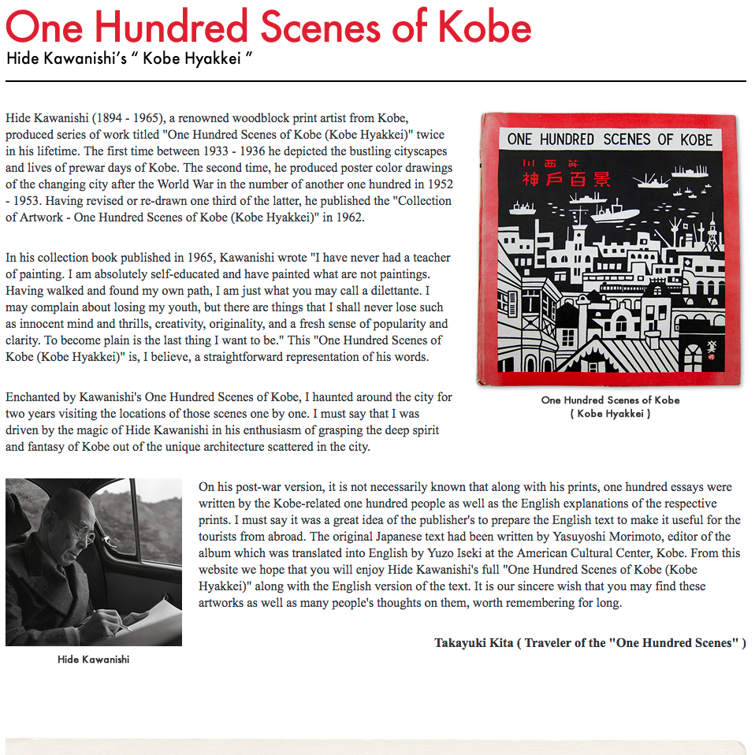

One Hundred Scenes of Kobe

I really like these paintings by Hide Kawanishi. Takayuki Kita went through the pains of visiting each of the sites, and taking photos from each place, to see what they look like now. Hide's style feels both classic, and new all at the same time. It's worth looking at each painting. There is so much I like, but here are a few call-outs: the framing of #77, the subtle reflection in #48, the perspective and story of #52, the colors of #98. I could keep going. Really, he seemed to show a great attention to detail - both on what to include and exclude.
I wish the page was better, so you could see thumbnails of all the paintings... but at least we get to see them.
One Hundred Scenes of Kobe Files...
- onehundredscenesofkobe41to50.zip
- onehundredscenesofkobe1to10.zip
- onehundredscenesofkobe21to30.zip
- onehundredscenesofkobe31to40.zip
- onehundredscenesofkobe81to90.zip
- onehundredscenesofkobe61to70.zip
- onehundredscenesofkobe71to80.zip
- onehundredscenesofkobe11to20.zip
- onehundredscenesofkobe91to100.zip
- onehundredscenesofkobe51to60.zip
- Prior: Luchador Mask
- Next: My Family's Slave